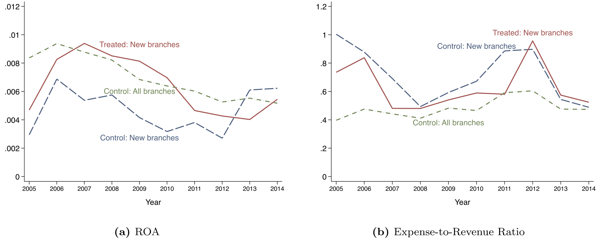
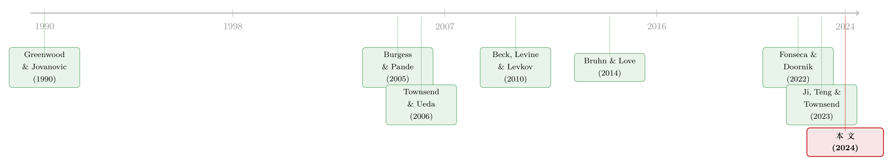

把银行开到镇上，谁的工资涨得最快？——一场普惠金融实验里意外长出的不平等
本文读的是 Fonseca & Matray (2024, Journal of Financial Economics)：巴西「全民银行」计划把政府银行的网点开进了原本没有银行的城市，结果不仅带来了存款、信贷、创业与就业的同步上升，还意外地拉大了城市内部的工资不平等——而且不平等的扩大，几乎全部集中在改革前受教育人口比例偏低的城市。一句话：当技能稀缺、又流动不起来时，金融发展的果实会顺着教育的阶梯往上爬。
1 一个被讲过太多遍、却很少被真正看清的故事
「把银行开到没有银行的地方去」——这大概是发展经济学里最古老、也最有人缘的政策处方之一。逻辑听上去无懈可击：网点离储户更近，分散在千家万户手里的储蓄就更容易被动员起来；网点离创业者更近，银行筛选和监督借款人的成本就更低，原本借不到钱的小生意于是有了启动资金。中国在 1970 年代、印度在 1980 年代、泰国在 1980 至 1990 年代，世界各地的政策制定者都做过同一件事：用大规模的改革，去铺设银行分支机构的物理网络。
可是,这套故事里其实藏着两个一直没被讲清楚的问题。
第一个问题是因果。我们当然观察到「有银行的地方更富」,但这究竟是银行带来了发展,还是发展本身吸引了银行进来?过去研究发展中国家的文献,大多依赖短期的、横截面的调查数据,看到的效应往往很小、很短命,甚至是负的——于是「普惠金融到底有没有用」始终悬而未决。
第二个问题更微妙,也是本文真正的主角:分配。假设普惠金融真的能促进增长,那它把蛋糕做大之后,这块更大的蛋糕是怎么切的?是让穷人追上来、缩小差距,还是让本就站在前面的人跑得更快?
关于这一点,主流理论给出的答案,恰恰和本文的发现相反——这正是这篇论文最有张力的地方。我们慢慢说。
2 一场恰到好处的自然实验:巴西的「全民银行」
要回答因果,你需要一个外生冲击。Fonseca 和 Matray 找到的,是巴西联邦政府在 2004 年推出的 「全民银行」计划(Banco para Todos,Banks for All)。
这个计划是 2004–2007 年多年规划(Plano Plurianual)的一部分,由财政部主导,目标直白:给巴西尚未被银行覆盖的人口提供金融服务。实现手段也直白——让政府控股的银行(主要是 Caixa Econômica Federal 和 Banco do Brasil)到那些此前没有任何政府银行网点的城市去开分行。按官方评估,计划期间公共银行新开了 7.8 million 个账户,确实触达了原先「无银行」的城镇。
这里有几个细节,决定了这个实验为什么「干净」。
巴西的「政府银行」并不是我们刻板印象里那种背着扶贫与产业指令、专放政策性亏损贷款的开发性机构。Banco do Brasil、Caixa 这类联邦控股银行,更准确的描述是「政府所有的商业银行」(government-owned commercial banks):它们是盈利的,业绩与外资及本土私人银行相当(Mettenheim, 2010)。论文用 Fig.2 证明了这一点——公共银行与私人银行在放贷、盈利、贷款表现、规模等一系列维度上没有显著差异。真正像印度社会银行实验里那种带补贴、带政治任务的开发银行(BNDES),被明确排除在外、也没参与这次网点扩张。
为什么这件事重要?因为它把一个常见的混淆变量摘掉了:如果效应来自补贴贷款或政治性放贷,那研究的就不是「普惠金融」,而是「财政转移」。而这里,放贷的是按商业逻辑运作的银行——所以本文能干净地把镜头对准「距离」这一个变量:把银行从遥远的邻市,搬到了你的镇上。
3 识别策略:在「无银行沙漠」里画一条对照线
接着,一个自然的问题是:怎么估计这个政策的因果效应?
作者用的是教科书式的 双重差分(difference-in-differences, DiD):把因政策而获得银行进入的城市(改革前没有任何政府银行的城市)当作处理组,把不受政策影响的城市当作对照组,比较两组在改革前后各项结果变量的演变差异。
但 DiD 的命门永远是:处理组和对照组本来就可比吗?这里作者做了几层防护,层层递进,值得细看——这也是石川式「但真正关键的一步在于……」该出场的地方。
第一步,匹配。 作者用一个简洁(parsimonious)的匹配程序为每个处理城市挑选对照城市,匹配变量是改革前的人口分位数和基尼系数增速(Gini growth)。注意,识别假设并不要求「政府银行的初始有无是随机的」——它只要求:若没有改革,处理组与对照组的结果变量会沿着相似的轨迹演变(平行趋势)。
第二步,自证平行。 作者展示了关键城市级结果在改革前的平行趋势,并证明匹配出的两组在一大批没有进入匹配过程的城市特征上也高度均衡——包括对大宗商品行业的暴露度、技能就业、政治归属、非正规部门规模、本地 GDP 与宏观波动的协动性等等。共同支撑(common support)在 DiD 里本不是必需的,但这种「连没匹配的维度也很像」,让平行趋势假设更可信。
第三步,直接控制。 把一大堆改革前变量与年份固定效应交互,跑遍数百种设定组合,点估计几乎纹丝不动。
但真正关键的一步在于第四步——城市×行业的 DiD。 作者利用数据的颗粒度,把分析单元下沉到「城市-行业」,从而能放进行业×年份固定效应,非参数地吸收掉任何随时间变化的、行业特定的冲击(比如大宗商品繁荣、贸易冲击)。此时,系数是在同一行业内、跨处理与对照城市比较出来的,根本不需要假设两组城市受到的行业冲击相似。结果呢?城市-行业层面的估计与城市层面高度一致。
这一连串稳健性,本质上是在回答同一句质疑:「你看到的会不会只是处理城市恰好更暴露于 2000 年代中期那场大宗商品繁荣?」作者的回答是:把每一条可能的捷径都堵上,系数都不动。
下面这条标准的事件研究(event study)设定,可以帮我们看清「动态」二字的含义(示意形式):
$$ y_{ct} = \alpha_c + \delta_t + \sum_{k \neq -1} \beta_k \cdot \big(\text{Treated}_c \times \mathbf{1}\{t = k\}\big) + \varepsilon_{ct} $$
这里 \(y_{ct}\) 是城市 \(c\) 在年份 \(t\) 的某个结果(就业、工资、企业数……),\(\alpha_c\) 和 \(\delta_t\) 分别是城市与年份固定效应,\(\text{Treated}_c\) 标记处理城市,\(\beta_k\) 描绘的就是相对改革前一年(\(k=-1\))的逐年效应。我们最想看到的是:\(k<0\) 时 \(\beta_k\approx 0\)(平行趋势),\(k\ge 0\) 时 \(\beta_k\) 拾级而上、并稳定在一个新水平,而不是一个转瞬即逝的脉冲。
如图 7 所示,改革效应在 2004 年之后逐步显现,沿着 2005 到 2014 年一路抬升并稳定在新的稳态——这不是「短期一次性注资」的样子,而是「网点永久搬近」之后的样子。

Figure 7: plots the evolution between 2005 and 2014, and shows
4 第一组结果:钱进来了,而且没有「均值回归」
我们先看金融端。
2004 年之后,处理城市的银行网点数量上升,带来了本地存款的流入,以及一个几乎等量级的信贷供给增加。更关键的是:网点、存款、信贷的增加不会均值回归,而是跃迁到一个更高的新稳态。这意味着外部融资与流动性服务的可得性发生了永久性改善——这正是普惠金融能不能驱动发展的前提。
而且,这些增加由政府银行驱动,对私人银行的挤出非常有限。私人信贷没有受到影响,这本身就是一个漂亮的安慰剂检验(placebo test):如果处理城市真的只是更暴露于巴西当期某种全经济范围的冲击,那私人信贷理应一起动——它没动,说明结果不是冲击驱动的。
5 第二组结果:增长是真的,而且来自「创造性破坏」
钱进来之后,实体经济动了吗?
动了,而且力度可观:
- 就业上升
10%,主要由小企业扩张驱动; - 劳动力需求上升把人均工资推高了
4.1%; - 企业数量增加约
10%——也就是说,改革催生了创业。
但「企业数 +10%」这个数字,其实低估了底层的活力。作者发现企业进入率和退出率同时上升——这是一幅典型的「创造性破坏」(creative destruction)图景:不是死水里多了几条鱼,而是整池水都在更快地新陈代谢。
那么,为什么把银行开近一点,就能催生创业和企业成长?这是全文机制部分最漂亮的一击。作者证明:政策效应的大小,与处理城市到改革前最近的有银行城市的距离成正比,并且对小企业更大。换句话说,真正起作用的不是「公共银行有什么特殊本领」——因为无论最近的那家银行是公是私,效应都一样大——而是物理距离的缩短本身,降低了储户、放贷人和借款人之间的信息摩擦与流动性成本。这与那一类「借贷双方距离决定信贷成本」的模型(Greenwood and Jovanovic, 1990;Petersen and Rajan, 1994;Hombert and Matray, 2017)严丝合缝。
作者还顺手排除了一个最常见的替代解释——「本地需求渠道」。如果只是因为居民有了信贷、消费上去了,那效应应该集中在依赖本地需求的非贸易部门。但作者发现,就业增长主要来自贸易部门(tradable sector),而贸易部门按定义不依赖本地需求。所以驱动增长的是供给侧的金融可得性,不是需求侧的消费刺激。
读到这里,如果你熟悉普惠金融这条线,可能会想起本博客此前的几篇:一篇讲支付数据如何在中国重塑普惠信贷(参见《一辆共享单车,如何让 1 亿人「被看见」?》),一篇用全美报税记录画出普惠金融的地图(参见《同样穷,为什么有人攒下了养老金?》)。本文和它们的区别在于:它抓住的不是「数据」或「触达」,而是最古老、最物理的那个变量——网点到你家的距离。
6 于是反转出现:做大的蛋糕,切得并不平均
到这里,故事都还很「正能量」。但论文的第三组结果,才是它真正的贡献,也是最反直觉的地方。
先说理论预期。研究金融发展与不平等的经典文献,大多预测工资不平等应当随金融发展而下降。直觉是:更多金融发展→更高生产率部门的劳动需求上升→那些原本困在低生产率部门的低薪工人被重新配置过来、工资上涨→差距缩小。这套逻辑的前提,是把劳动看成一种同质的(homogeneous)投入(Buera et al., 2021;Ji et al., 2023 也得到工资上升压低不平等的结论)。
可巴西的数据说了「不」。
作者发现,改革显著拉大了处理城市内部的工资不平等。原因不是有人变差了——所有工人在改革后都更好了——而是工资涨幅沿着工人在工资分布中的位置单调递增:你本来挣得越多,这次涨得越多。
而且作者用工人面板数据堵死了「样本构成变化」这个解释。这个上涨不是因为改革后一批高薪者涌入了正规部门;在固定了个人的性别、年龄、教育、职业和行业之后,工资不平等的扩大依然存在。即便把样本限制在「整个样本期都能观察到的工人」和「改革前就已在数据里的企业」,结论也几乎不变。
那到底是什么在起作用?作者检验了两个解释。
解释一(被否定):技能偏向的需求。 也许金融发展提高了对技能劳动的相对需求,于是企业会提高劳动力中技能工人的比重。但数据显示:处理城市企业的技能工人占比并没有上升。这条路走不通。
解释二(被支持,也是全文的「核心」):技能稀缺 + 流动不起来。 在发展中国家,技能本就稀缺,短期内技能劳动的供给比非技能劳动更缺乏弹性。作者证明,巴西这些城市内部迁移成本很高,而且改革并没有引发工人向处理城市迁移。既然外面的技能工人进不来,新增的劳动需求就只能由本地既有的技能工人来满足——于是稀缺的技能工人议价能力上升,工资被抬得更高。
这条逻辑链最有力的证据是一个横截面异质性:不平等的全部上升,集中在改革前受教育人口比例较低的城市。哪里技能越稀缺,金融发展把不平等推得越高。这就把「技能稀缺驱动了金融发展如何影响不平等」从一句口号,变成了一个可检验、且被数据证实的命题。
这个发现的政策含义并不轻松:普惠金融可以同时是「增长的引擎」和「不平等的放大器」。它做大了蛋糕,但在技能供给僵硬的地方,新增的那部分蛋糕主要落进了受教育者的口袋。把劳动当成同质投入的宏观-发展模型,会系统性地预测错不平等的方向。
(关于「金融与不平等」在另一些场景下如何相互作用,本博客也讨论过并购作为不平等放大器的案例,参见《并购不只是换老板:它是技术「搬运工」,也是不平等的「放大器」》。)
7 文献脉络:从「金融发展会抹平差距」到「要看技能够不够」
把这篇论文放回它所在的脉络里,故事就更清楚了。
最早,Greenwood and Jovanovic (1990) 给出了金融发展与收入分配之间一条著名的倒 U 关系:金融体系成熟,既能促进增长,又会改变分配。Townsend and Ueda (2006) 在模型里量化了金融深化、不平等与增长的互动。这一支理论文献的共同特点,是结论模糊——金融发展对不平等的影响,取决于它发生在集约边际还是扩展边际、取决于人能否积累人力资本——但当劳动被当作同质投入时,它们普遍预测工资不平等会随金融发展而下降。
实证这一端,发展中国家的早期证据来自具体的、局部的银行实验:Burgess and Pande (2005) 用印度各邦的社会银行实验,Bruhn and Love (2014) 用墨西哥一家面向低收入者的银行在超市里开网点的事件。这些研究要么样本短、要么聚焦于直接受影响的银行客户,效应估计或正或负、且往往不大。发达国家这边,Beck, Levine and Levkov (2010) 用美国银行业放松管制的证据,讨论了谁是赢家、谁是输家。

晚近,这条线开始「结构化」:Fonseca and Doornik (2022)——本文一作的前作——用巴西破产改革研究了金融发展对劳动力市场的影响;Ji, Teng and Townsend (2023) 则建了一个动态银行扩张的空间模型,把到最近银行的地理距离作为治理金融中介成本的核心参数,直接连起空间增长、金融可得性与不平等。
本文(2024)正好坐在这个交叉口上:它既提供了发展中国家长期、行政全样本的因果证据,又把「距离」这个结构模型里的关键参数,变成了一个可以被估计的因果对象;更重要的是,它指出了既有模型普遍缺失的一块——劳动异质性与人力资本积累的约束,正是这块缺失,让标准模型在不平等的方向上算反了。
8 评论与延伸(Q&A + 研究方向)
(a) 几个可能的疑问
Q:这不就是又一篇「银行开网点促增长」的论文吗,新在哪?
新在三处。其一,它用的是覆盖全体正规部门工人的行政面板(2000–2014),能追踪个人与企业,从而把因果链条从金融可得性一路拉到分配后果,而过去发展中国家的证据多是短期横截面调查。其二,它把放贷主体限定为盈利的政府商业银行,从而把效应干净地归到「距离」而非补贴。其三,也是最重要的,它发现金融发展抬高而非压低了工资不平等,并给出了「技能稀缺 + 低流动性」这一可检验的机制。
Q:DiD 的平行趋势可信吗?会不会是处理城市本来就更暴露于大宗商品繁荣?
作者用四道防线回应:改革前平行趋势、未匹配维度上的协变量均衡(含大宗商品暴露度)、改革前控制变量×年份的数百种设定、以及城市×行业 DiD 加行业×年份固定效应。最后一条尤其关键——它在同一行业内跨城市比较,非参数地吸收掉任何行业特定的时变冲击,因此根本不需要假设处理与对照城市受大宗商品冲击的程度相同。点估计在所有设定下都稳定。
Q:既然政府银行进来了,会不会是政治性放贷或福利转移在驱动结果?
作者把这条路也堵了。被研究的政府银行是盈利的商业银行,与私人银行在放贷实践上无异;带政策任务的开发银行 BNDES 被排除。更妙的是,对照城市本来就有政府银行,因此任何针对政府银行的冲击(比如公共银行整体增加放贷)、以及主要由公共银行发放的大型福利项目(如 Bolsa Família)的扩张,会同时影响处理组与对照组,被 DiD 差掉。再加上 state×year 固定效应,州级福利差异也被吸收。
Q:为什么不平等上升,而不是像主流理论预测的那样下降?
因为主流理论把劳动当成同质投入。一旦承认技能劳动的供给在短期内更缺乏弹性,且工人迁移成本高、外地技能工人进不来,那么新增的劳动需求只能由本地稀缺的技能工人满足,他们的工资被抬得更高。证据是:技能工人占比没上升(否定了技能偏向需求),且不平等的扩大全部集中在改革前受教育比例低的城市。
Q:为什么作者那么强调「距离」?
因为「距离」是宏观-发展模型(如 Ji et al., 2023)里治理金融中介成本的核心参数,却很少被因果地估计。本文显示效应随到最近银行城市的距离成比例增大、对小企业更大、且不分公私银行,正好把这个抽象参数落到了可观测的因果量上,并提示普惠金融不是「有/无」的二元概念,而应被看作连续的。
Q:这些结论能外推到发达国家或别的政策吗?
要小心。机制的关键前提是「技能稀缺 + 低流动性」,这在发展中国家、尤其是「银行沙漠」里更成立;作者也确实发现银行沙漠城市的效应远大于其他城市,暗示在极低外部融资水平附近存在一个通常未被显式建模的非线性。在技能供给富有弹性、劳动力高度流动的环境里,不平等的方向未必相同。
(b) 几个可能的研究问题与提案
1. 把「距离」搬到公司债/信用市场。 【经济故事】本文证明了实体借款人到银行网点的物理距离影响信贷可得与实体结果。一个自然延伸:在公司债一级市场,发行人到主要承销商、到机构投资者集群的「距离」(地理或网络距离)是否影响发行成本与配售?稀缺的、流动性差的信用资产,其定价是否也沿着「投资者稀缺度」的阶梯分布? 【可行性】中。需要发行层面数据(如 Mergent FISD)+ 承销商/投资者地理信息,识别可借助网点合并或承销商退出等准实验。难点是「距离」在信用市场更多是网络而非物理概念,工具变量较难找。
2. 外资银行进入与本地工资不平等。 【经济故事】本文是政府银行进入。换成外资持有人/外资银行进入新兴市场,会不会因为外资更偏好服务大企业、技能岗位,而把不平等推得更高?「外资 vs 内资」的进入,对技能溢价的影响方向是否不同? 【可行性】中。多国银行业开放时点可构成交错 DiD;需匹配 employer-employee 数据(巴西 RAIS、墨西哥等)。识别威胁在于外资进入的内生选择,需用开放政策的外生时点。
3. 技能稀缺度作为「金融发展→不平等」的调节变量,可否做成可移植的预测指标? 【经济故事】本文的核心异质性是「改革前受教育比例」。能否构建一个事前的「技能稀缺指数」,在政策实施前预测哪些地区的普惠金融会显著恶化不平等,从而指导政策配套(如同步的技能培训)? 【可行性】高。所需仅为人口普查的教育分布 + 政策时点,可在任何有微观普查的国家复制;本质是把本文的横截面异质性升级为可外推的政策工具。
4. 网点搬近后,流动性服务渠道有多大? 【经济故事】本文把效应归于「距离缩短降低了筛选/监督成本」,但也提到流动性服务。能否分离出「信贷渠道」与「流动性/储蓄渠道」各自对就业与创业的贡献? 【可行性】中低。需要账户层面的存取款与信贷明细,在行政数据里未必可得;若能拿到 ESTBAN 之外的账户级数据则 doable。
5. 创业的「创造性破坏」是否带来长期生产率增长? 【经济故事】本文发现企业进入率与退出率同时上升。一个开放问题:这种加速的新陈代谢,十年、二十年后是否转化为更高的全要素生产率,还是只是「churn」而无净增益? 【可行性】中。需要把样本期延长到 2014 年之后,匹配企业生产率数据;识别上可继续沿用本文的 DiD 框架做长期事件研究。
9 我的判断
贡献。 这篇论文最扎实的地方,是用一个近乎理想的自然实验 + 全样本行政面板,把「普惠金融」这条因果链从金融可得性一路打通到分配后果,并且翻转了一个流行的理论预测:金融发展不必然抹平工资差距,在技能稀缺且劳动力流动不起来的地方,它反而会放大差距。把「到最近银行的距离」做成一个可估计的因果参数,以及指出「劳动异质性 + 人力资本约束」是宏观-发展模型缺失的一块,都是会被后续结构建模直接拿去用的「因果矩」。
对识别的担忧。 我最在意两点。其一,匹配只在「人口分位数 + 基尼增速」两个维度上做,虽然作者证明了大量未匹配维度也均衡,但「政府银行的初始有无」终究是历史选择的结果,处理城市可能在某些不可观测的、与 2004 年后冲击交互的维度上仍有差异——城市×行业 DiD 缓解了行业冲击,却缓解不了纯城市层面的不可观测异质性。其二,所有结果都只反映正规部门;尽管作者用稳健性检验说明结果不是由非正规→正规的转移驱动,但工资不平等这种对样本构成极其敏感的指标,在一个非正规部门庞大的经济体里,我还想看到更多关于「谁进入了正规部门」的刻画。
后续想看到什么。 一是更长的窗口:这套「更高稳态」的金融发展,二十年后是否把不平等进一步固化,还是被随后赶上的技能供给(教育扩张)逐渐熨平?二是把同样的实验设计套到外资进入或信用市场上,检验「距离/稀缺度驱动分配」这个机制的边界在哪里。如果这个机制是普适的,那它对当下全世界仍在推进的、形形色色的普惠金融政策,都是一句冷静的提醒:先看看你的技能供给,够不够稀缺。
参考文献
- Beck, T., Levine, R., Levkov, A. (2010). Big bad banks? The winners and losers from bank deregulation in the United States. Journal of Finance 65(5), 1637–1667.
- Bruhn, M., Love, I. (2014). The real impact of improved access to finance: evidence from Mexico. Journal of Finance 69(3), 1347–1376.
- Buera, F., Kaboski, J., Shin, Y. (2021). The macroeconomics of microfinance. Review of Economic Studies 88(1), 126–161.
- Burgess, R., Pande, R. (2005). Do rural banks matter? Evidence from the Indian social banking experiment. American Economic Review 95(3), 780–795.
- Coelho, C., de Mello, J., Rezende, L. (2013). Do public banks compete with private banks? Evidence from concentrated local markets in Brazil. Journal of Money, Credit and Banking 45(8), 1581–1615.
- Fonseca, J., Doornik, B.V. (2022). Financial development and labor market outcomes: evidence from Brazil. Journal of Financial Economics 143(1), 550–568.
- Fonseca, J., Matray, A. (2024). Financial inclusion, economic development, and inequality: Evidence from Brazil. Journal of Financial Economics 156, 103854.
- Greenwood, J., Jovanovic, B. (1990). Financial development, growth, and the distribution of income. Journal of Political Economy 98(5), 1076–1107.
- Hombert, J., Matray, A. (2017). The real effects of lending relationships on innovative firms and inventor mobility. Review of Financial Studies 30(7), 2413–2445.
- Ji, Y., Teng, S., Townsend, R.M. (2023). Dynamic bank expansion: spatial growth, financial access, and inequality. Journal of Political Economy 131(8), 2209–2275.
- Petersen, M., Rajan, R. (1994). The benefits of lending relationships: evidence from small business data. Journal of Finance 49(1), 3–37.
- Townsend, R., Ueda, K. (2006). Financial deepening, inequality, and growth: a model-based quantitative evaluation. Review of Economic Studies 73(1), 251–280.